Data Preparation
Data Preperation
Datasets Used
To apply GIS-based Accessibility Analysis and Mapping of Emergency Evacuation Centres and Medical Services, we need the DEM layer of Derna, the hexagonal layer of Derna City, the OSM layer of Derna and the floor extent of Derna. These data can be obtained from the following datasets:
OSM data for Libya
Format: SHP
Purpose: An open street map shapefile of Libya used to determine the number of buildings, schools and universities in Derna city.
Note: Download the file named “libya-latest-free.shp.zip” under “Commonly Used Formats”.
Flood impact on Derna
Format: SHP
Purpose: A shapefile showing the extent of Derna city that has been affected by the flood
Link: https://data.humdata.org/dataset/flood-impact-assessment-in-derna-dams-east-province-libya
Derna Health Facilities
Format: Geopackage
Purpose: A geopackage with the locations of health facilities in Libya
Link: https://data.humdata.org/dataset/hotosm_lby_health_facilities
Derna Road Layer
Format: Geopackage
Purpose: A geopackage of the roads that are located within Libya
Derna City Hexagon Layer
Format: SHP
Purpose: A shapefile showing Derna city classified into hexagons
Link: Provided on elearn
30-meter Digital Elevation Model (DEM) data, taken from the Shuttle Radar Topography Mission (SRTM)
Format: TIFF
Purpose: A raster dataset of the elevation across Derna city to assess the suitability of selected potential evacuation centres and healthcare facilities.
Note: You will need to create a USGS account in order to download the SRTM DEM data. Follow the steps in 3.2.3 Extracting the DEM data from USGS to retrieve the data.
Open aerial map of Derna
Format: TIFF
Purpose: A raster layers used as a background for all our maps
Link: https://map.openaerialmap.org/#/-18.6328125,18.47960905583197,3?_k=2un4va
Note: Follow the steps in 3.2.2 to extract the satellite images for the Derna study area.
Steps
Create 3 folders named “data.shp”, “geopackage” and “data.tif”
data.shp folder
- Unzip the “libya-latest-free.shp”, “FL20230912LBY_SHP” and “Derna_city_250m_hexagon” files and put them into the folder.
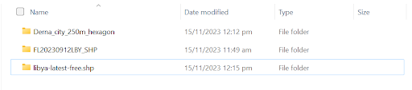
data.tif folder
Put the “01_07_23” and “13_09_23” TIFF files into the folder
Move the “n32_e022_1arc_v3” TIFF file into the folder
geopackage folder
- Unzip the “hotosm_lby_health_facilities_gpkg” and “hotosm_lby_roads_gpkg” files and put them into the folder.
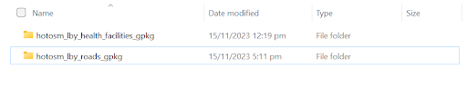
3.2 Data Preperation
3.2.1 Importing
Open QGIS and start a new project (Project > New). Change CRS to EPSG:3197 at the bottom right. This is the CRS location of where Derna city falls under.
From the browser sidebar, look for the following layer file in their respective folders and add them into layers (via double click):
Derna_city_250m_hexagon
PHR_20230913_FloodExtent_Derna
gis_osm_buildings_a_free_1
gis_osm_pois_a_free_1
Health Facilities
Roads (Only linestring layer)
13_09_23
01_07_23
n32_e022_1arc_v3
3.2.2 Preparing the OpenAerial Satellite Images
3.2.2.1 Retrieving images from OpenAerialMap
Go to https://openaerialmap.org/ and click Start Exploring to open up the map view.
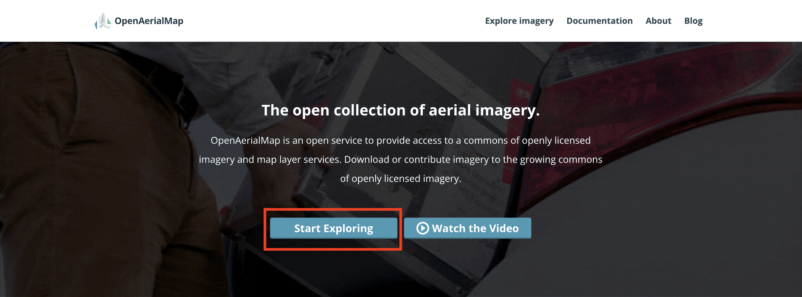
In the map page, type Derna into the search bar and click the Derna option to locate it on the map view.
Click the gridsquare containing Derna. It should have 2 satellite images – one pre-flood taken in July 2023, and one post-flood taken in September 2023.
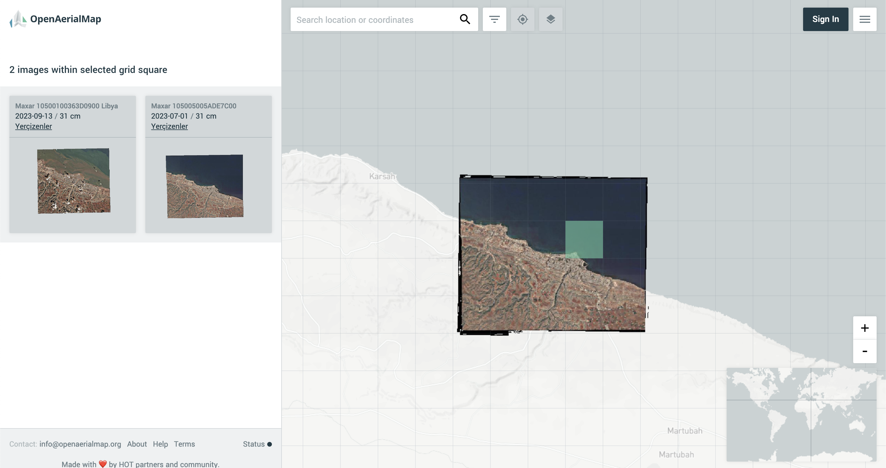
Click the thumbnail of the first image and click the download icon in the small 4-icon toolbar.
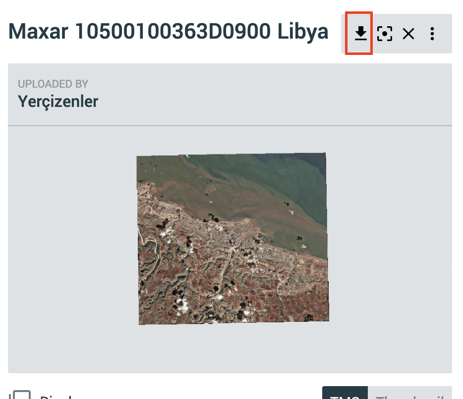
Once downloaded, rename the file to “01_07_2023”. Move the file into its respective data folder in your project folder.
Repeat this for the second satellite image, and name it “13_09_23”.
3.2.2.2 Clipping satellite images to study area
Import the layers using “Layer” from the top menu bar > Add Layer > Add Raster Layer…
Under Raster dataset(s), click the three dots icon.
- Navigate to your data folder and select both downloaded TIFF files
Click Add
We will be clipping the satellite images extracted from OpenAerial to our study area: the hexagon map of Derna city.
- Navigate to: “Raster” from the top menu bar > Extraction > Clip Raster by Extent…
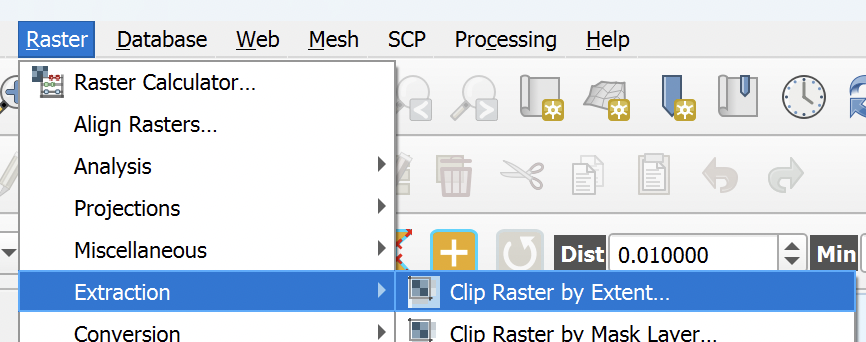
For the input fields, set
Input layer: 13_09_23
Clipping extent:
Click the down arrow next to the pointer icon
Under Calculate from layer, select Derna_city_250m_hexagon
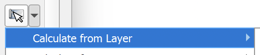
This should create a temporary raster layer named Clipped in your Layers panel. We will now save this as a TIFF file in our data.tif folder within our project folder.
Repeat the steps above for 13_09_23 to produce the 13_09_23_clipped layer.
3.2.3 Extracting the DEM data from USGS
Launch the USGS website. Before you can download any data set from the USGS portal, you will need to register for an account.
Click on Login button located at the upper-right corner of the webpage. Complete the online registration, including verification.
Now you should be able to download data from USGS.
3.2.3.1 Selecting the study area of Derna
In the lefthand side under Search Criteria,
Select World Features
Under Feature name, type Darnah
Click Show
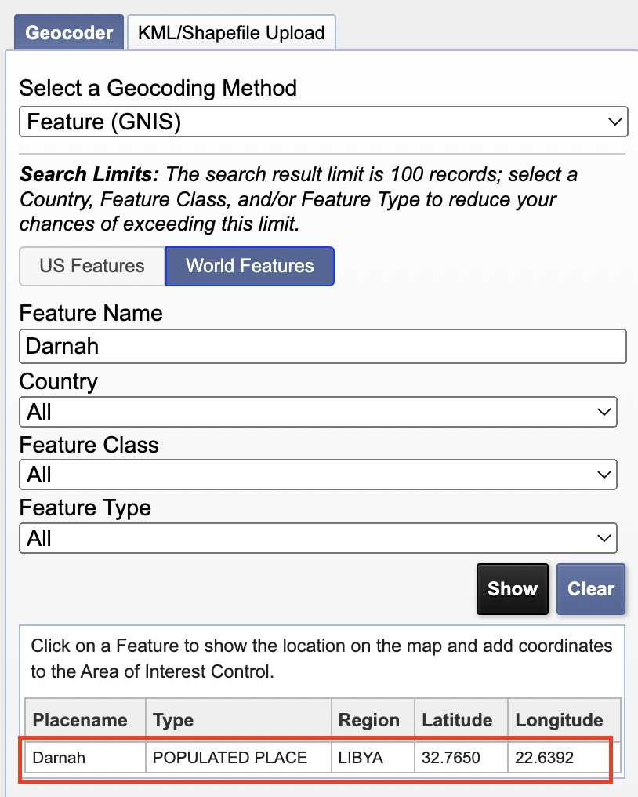
In the results generated, select Darnah to see the map view.
Using the plus button in the upper right corner of the map, zoom in until your view is similar to this:

Select the Use Map button.
3.2.3.2 Selecting the DEM data to download
Next, we will select which data set to download. Under the Dataset tab, navigate to Digital Elevation > SRTM and expand it.
Click on the check-box in front of SRTM 1 Arc-Second Global.
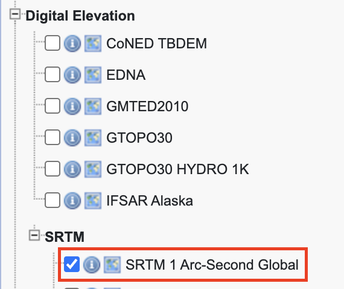
3.2.3.3 Downloading the DEM
Click on the Results tab. Only 1 dataset may be available (SRTM1N32E022V3).
At SRTM1N32E022V3 pane, click on the download icon  .
.
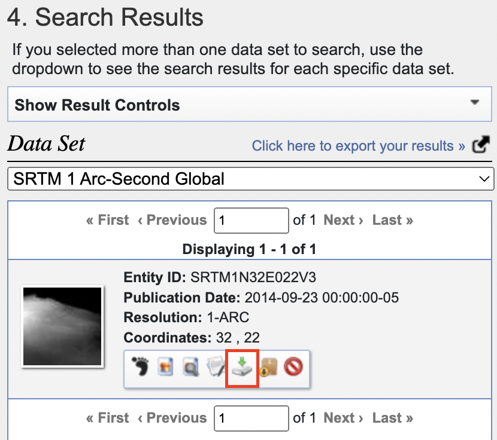
In the Download Options window, click download for the GeoTIFF 1 Arc-second option to download the DEM TIFF file.
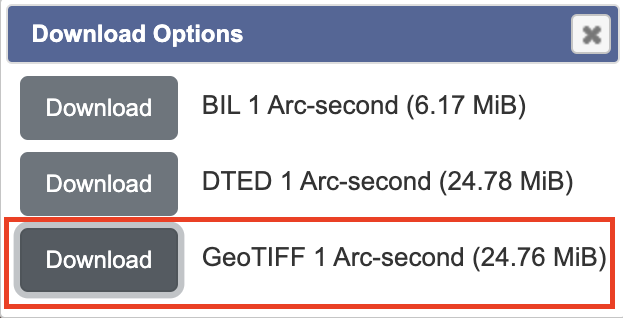
Data Dictionary
Vector Layers
Buildings
| Name | Buildings |
| Provider | ogr |
| Storage | GPKG |
| Encoding | UTF-8 |
| Geometry | Polygon (MultiPolygon) |
| Feature Count | 8,850 |
| Name | EPSG:3197 - LGD2006 / Libya TM zone 12 |
| Units | meters |
| Method | Transverse Mercator |
| Celestial Body | Earth |
| Reference | Static (relies on a datum which is plate-fixed) |
| Name | Type | Remarks |
| fid | Integer64 | Unique feature id to the layer |
| osm_id | String | OSM Id taken from the Id of this feature (node_id, way_id, or relation_id) in the OSM database. |
| fclass | String | Class name of this feature. |
| name | String | Name of this feature, like a street or place name. |
Hexagon
| Name | Derna_city_250m_hexagon |
| Provider | ogr |
| Storage | GPKG |
| Encoding | UTF-8 |
| Geometry | Polygon (MultiPolygon) |
| Feature Count | 361 |
| Name | EPSG:3197 - LGD2006 / Libya TM zone 12 |
| Units | meters |
| Method | Transverse Mercator |
| Celestial Body | Earth |
| Reference | Static (relies on a datum which is plate-fixed) |
| Name | Type | Remarks |
| fid | Integer64 | Unique feature id to the layer |
| id | Real | |
| left | Real | |
| top | Real | |
| right | Real | |
| bottom | Real | |
| PCode | String |
Flood Extent
| Name | flood_extent |
| Provider | ogr |
| Storage | GPKG |
| Encoding | UTF-8 |
| Geometry | Polygon (MultiPolygon) |
| Feature Count | 1 |
| Name | EPSG:3197 - LGD2006 / Libya TM zone 12 |
| Units | meters |
| Method | Transverse Mercator |
| Celestial Body | Earth |
| Reference | Static (relies on a datum which is plate-fixed) |
| Name | Type | Remarks |
| fid | Integer64 | Unique feature id to the layer |
| Sensor_Dat | Date | The date when the data was remotely sensed. |
| Area_m2 | Real | Area of flood extent, in square metres |
| Area_ha | Real | Area of flood extent, in hectares. |
| SHAPE_Leng | Real | |
| SHAPE_Area | Real |
Flood Zonal Statistics
| Name | flood_zonal_statistics |
| Provider | ogr |
| Storage | GPKG |
| Encoding | UTF-8 |
| Geometry | Polygon (MultiPolygon) |
| Feature Count | 1 |
| Name | EPSG:3197 - LGD2006 / Libya TM zone 12 |
| Units | meters |
| Method | Transverse Mercator |
| Celestial Body | Earth |
| Reference | Static (relies on a datum which is plate-fixed) |
| Name | Type | Remarks |
| fid | Integer64 | Unique feature id to the layer |
| Sensor_Dat | Date | The date when the data was remotely sensed. |
| _mean | Real | Summary statistics of the flood extent elevation levels based on DEM |
| _median | Real | |
| _min | Real | |
| _max | Real |
Non-Viable School Sites
| Name | Non-viable School Sites |
| Provider | ogr |
| Storage | GPKG |
| Encoding | UTF-8 |
| Geometry | Point (Point) |
| Feature Count | 8 |
| Name | EPSG:3197 - LGD2006 / Libya TM zone 12 |
| Units | meters |
| Method | Transverse Mercator |
| Celestial Body | Earth |
| Reference | Static (relies on a datum which is plate-fixed) |
| Name | Type | Remarks |
| fid | Integer64 | Unique feature id to the layer |
| osm_id | String | OSM Id taken from the Id of this feature (node_id, way_id, or relation_id) in the OSM database. |
| fclass | String | Class name of this feature. |
| name | String | Name of this feature, like a street or place name. |
Viable School Sites / Evacuation Centres
| Name | Viable School Sites/Evacuation Centres |
| Provider | ogr |
| Storage | GPKG |
| Encoding | UTF-8 |
| Geometry | Point (Point) |
| Feature Count | 14 |
| Name | EPSG:3197 - LGD2006 / Libya TM zone 12 |
| Units | meters |
| Method | Transverse Mercator |
| Celestial Body | Earth |
| Reference | Static (relies on a datum which is plate-fixed) |
| Name | Type | Remarks |
| fid | Integer64 | Unique feature id to the layer |
| osm_id | String | OSM Id taken from the Id of this feature (node_id, way_id, or relation_id) in the OSM database. |
| fclass | String | Class name of this feature. |
| name | String | Name of this feature, like a street or place name. |
Health Facilities
| Name | Derna - HF_combined |
| Provider | ogr |
| Storage | GPKG |
| Encoding | UTF-8 |
| Geometry | Point (Point) |
| Feature Count | 5 |
| Name | EPSG:3197 - LGD2006 / Libya TM zone 12 |
| Units | meters |
| Method | Transverse Mercator |
| Celestial Body | Earth |
| Reference | Static (relies on a datum which is plate-fixed) |
| Name | Type | Remarks |
| fid | Integer64 | Unique feature id to the layer |
| name | String | Name of this feature, like a street or place name. |
| healthcare:speciality | String | Specialty of the health facility |
| capacity:persons | String | Capacity of the health facility |
| addr:full | string | Address of the health facility |
| fid_2 | Integer64 | Unique feature id to the layer |
| name_2 | String | Name of this feature, like a street or place name. |
| healthcare:speciality_2 | String | Specialty of the health facility |
| capacity:persons_2 | String | Capacity of the health facility |
| addr:full_2 | string | Address of the health facility |
Population Density
| Name | Derna - HF_combined |
| Provider | ogr |
| Storage | GPKG |
| Encoding | UTF-8 |
| Geometry | Polygon (MultiPolygon) |
| Feature Count | 361 |
| Name | EPSG:3197 - LGD2006 / Libya TM zone 12 |
| Units | meters |
| Method | Transverse Mercator |
| Celestial Body | Earth |
| Reference | Static (relies on a datum which is plate-fixed) |
| Name | Type | Remarks |
| fid | Integer64 | Unique feature id to the layer |
| NUMPOINTS | Real | Number of buildings in each hexagon |
Accessibility Choropleth
| Name | Derna - HF_combined |
| Provider | ogr |
| Storage | GPKG |
| Encoding | UTF-8 |
| Geometry | Polygon (MultiPolygon) |
| Feature Count | 361 |
| Name | EPSG:3197 - LGD2006 / Libya TM zone 12 |
| Units | meters |
| Method | Transverse Mercator |
| Celestial Body | Earth |
| Reference | Static (relies on a datum which is plate-fixed) |
| Name | Type | Remarks |
| fid | Integer64 | Unique feature id to the layer |
| combined_acc | String | Accessibility ranking |
Raster Layers / Files
DEM Clipped
| Name | DEM_clipped |
| Provider | gdal |
| Extent | 160726.9545999999972992,3623608.3053000001236796 : 170731.5739999999932479,3629194.6093999999575317 |
| Width | 383 |
| Height | 132 |
| Data type | Int16 – Sixteen bit signed integer |
| GDAL Driver Metadata | GeoTIFF |
| Pixel size | 26.12172167101829956,-30.69397857142769936 |
| Name | EPSG:3197 - LGD2006 / Libya TM zone 12 |
| Units | meters |
| Method | Transverse Mercator |
| Celestial Body | Earth |
| Reference | Static (relies on a datum which is plate-fixed) |
| Number | Band | NoData | Min | Max |
| 1 | Band 1: Height | -32768 | -4.0000000000 | 230.0000000000 |
01_07_23
| Name | 01_07_23 |
| Provider | gdal |
| Extent | 639843.7500000000000000,3614843.7500000000000000 : 665156.2500000000000000,3635156.2500000000000000 |
| Width | 82944 |
| Height | 66560 |
| Data type | Int16 – Sixteen bit signed integer |
| GDAL Driver Metadata | GeoTIFF |
| Pixel size | 0.30517578125,-0.30517578125 |
| Name | EPSG:32634 - WGS 84 / UTM zone 34N |
| Units | meters |
| Method | Transverse Mercator |
| Celestial Body | Earth |
| Reference | Static (relies on a datum which is plate-fixed) |
| Number | Band | NoData | Min | Max |
| 1 | Band 1 | n/a | 0.0000000000 | 255.0000000000 |
| 2 | Band 2 | n/a | 0.0000000000 | 255.0000000000 |
| 3 | Band 3 | n/a | 0.0000000000 | 255.0000000000 |
| 4 | Band 4 | n/a | 0.0000000000 | 255.0000000000 |
13_09_23_clipped
| Name | 13_09_23_clipped |
| Provider | gdal |
| Extent | 648061.2182617187500000,3623545.2270507812500000 : 658092.6513671875000000,3628920.2880859375000000 |
| Width | 32871 |
| Height | 17613 |
| Data type | Byte – Eight bit signed integer |
| GDAL Driver Metadata | GeoTIFF |
| Pixel size | 0.30517578125,-0.30517578125 |
| Name | EPSG:32634 - WGS 84 / UTM zone 34N |
| Units | meters |
| Method | Transverse Mercator |
| Celestial Body | Earth |
| Reference | Static (relies on a datum which is plate-fixed) |
| Number | Band | NoData | Min | Max |
| 1 | Band 1 | n/a | 0.0000000000 | 255.0000000000 |
| 2 | Band 2 | n/a | 0.0000000000 | 255.0000000000 |
| 3 | Band 3 | n/a | 0.0000000000 | 255.0000000000 |